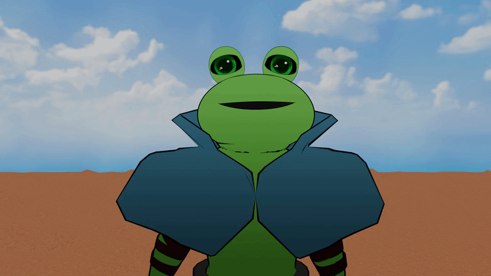
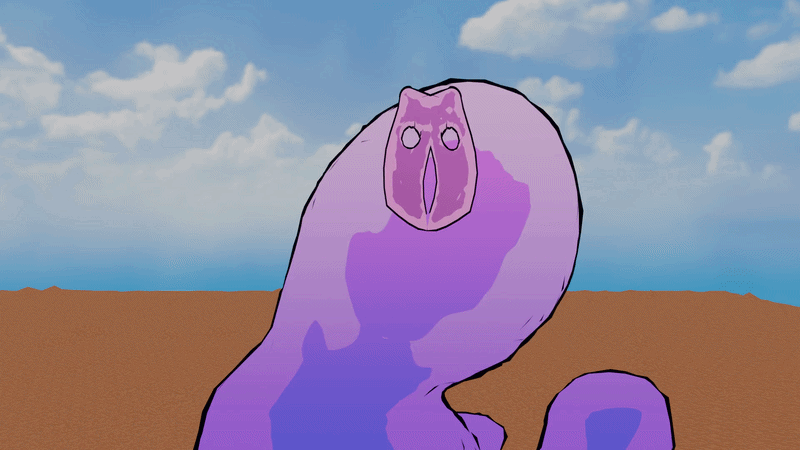
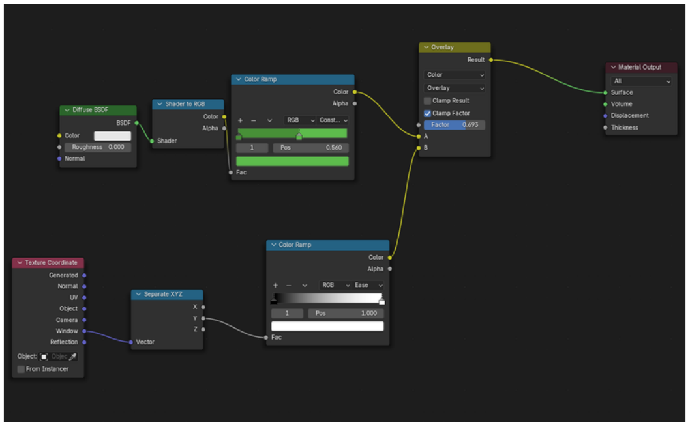
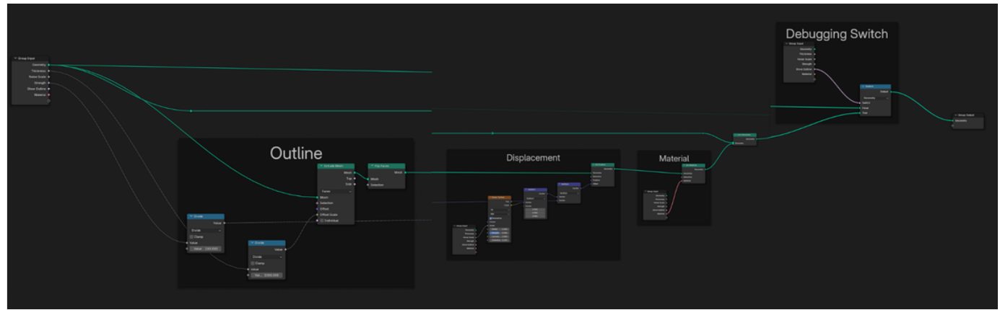

A caped frog-knight character and a shapeshifting slime creature, rigged for stylised, exaggerated movement rather than realistic simulation.
← Back to homeRig and animation demo

Cape rig — wiggle bones

Slime rig — squash and stretch
The cape is made with wiggle bones so that it can have a wavy feel to it and can be more controlled than a cloth simulation. This allows the movement to be intentionally exaggerated and stylised, giving it an extra 2D feel rather than aiming for realistic cloth behaviour. The bone-based rig also gives greater control over the cape's shape, allowing specific areas to be posed, adjusted, and animated independently. This makes it easier to create expressive movements and maintain consistency throughout the animation while keeping the cape responsive to the character's motion.
The slime rig is divided into two main parts. The first part uses Bendy Bones to create a flexible squash-and-stretch effect, allowing the slime to deform naturally while still maintaining a stylised look. To gain more control over the body, the rig is divided into four sections, which can be manipulated independently. This allows the slime to bend, stretch, and even change direction midway through its body, creating more organic and unpredictable movements that give it a more sentient and expressive feel.
The second part uses a Lattice modifier, which works together with the rig to provide smoother and more detailed deformation across the slime's body. The lattice helps blend the movements between the different rig sections, preventing the deformation from looking too segmented or rigid. Together, the Bendy Bones and Lattice give the slime a high level of control while keeping its movements fluid, exaggerated, and animation-friendly, rather than relying on realistic simulation.
I used Geometry Nodes to create a soft, organic pattern that mimics how watercolour spreads. By blending gradients with noise, I added natural variation and smooth colour transitions to get a diffused, hand-painted look. I also added a custom outline modifier using nodes, which gives me control over the edges and helps enhance the overall watercolour style.

